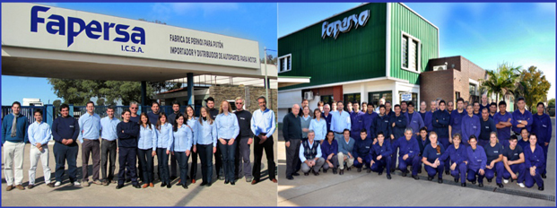
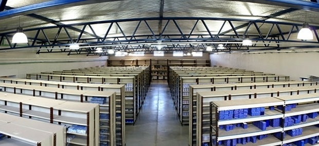
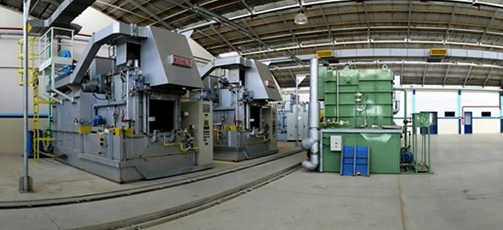

Information about the company
Born on 1st September 1963, by an entrerprise group dedicated to the commercialization of automotive parts, and with entirely national capitals, makes its primary steps under license and assessment of SUKO (Germany).
The exports in those years was about 5 % of the sales and involved Mexico, U.S.A. and Colombia. The occupied area was 900m2. In the eighties, the exports increased up to 35 %, including clients from Uruguay, Chile, Brazil and Peru.
In 1986, the factory was relocated, covering an area of 3000m2, in a premise of 4800 m2.
Since 1992, in the middle of business generated by Mercosur, we sign a trade agreement with MAHLE LTDA DO BRAZIL, subsidiary of MAHLE GMBH (Germany), world leader manufacturer of pistons, liners, bushings, pistons rings and kits, for the interchanging of engine parts.
In 1998, together with other associated companies, Fapersa bought a 17 Has lot, making real the first private industrial park of the region.
Nowadays, Fapersa employs 80 persons among directors, engineers, technicians, operators and administration
Until now the factory has made over 65.000.000 piston pins of a wide range of measures and applications.


